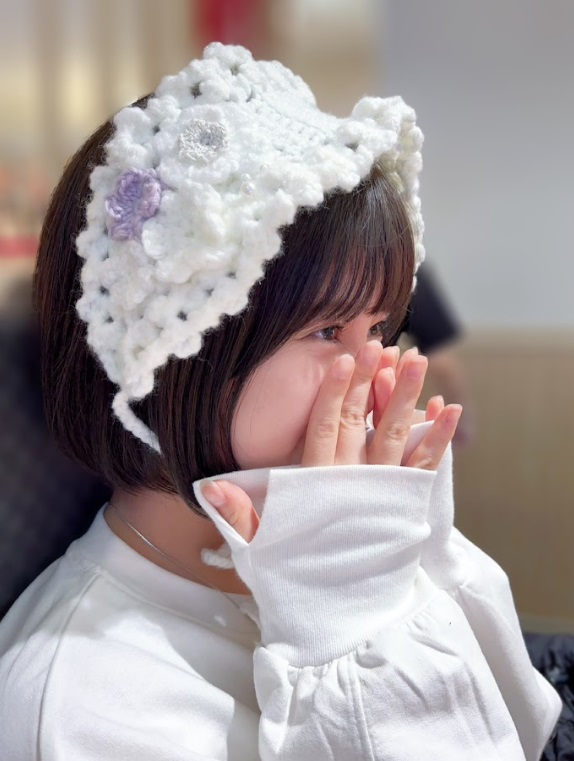

橘杏咲の立ち話もなんですから！ 第６回橘杏咲的“站着聊可说不完！” 第6回
皆さん、あけましておめでとうございます🎍✨橘杏咲です！
大家新年快乐🎍✨ 我是橘杏咲！
とうとう2025年になりましたね！今年は巳年🐍
终于迈入2025年了呢！今年是蛇年🐍
諸説はありますが、蛇は脱皮をするというイメージから、巳年は「復活と再生」を意味し、新しいことが始まる年になると言われているみたいです！私にとっても、2025年は新しいことが始まる年だなと感じているので、巳年にピッタリですね！
虽说众说纷纭，但因为蛇有蜕皮的意象，据说蛇年象征着“复活与再生”，是开启全新事物的一年！对我而言，也觉得2025年正是新事物萌发的一年，跟蛇年简直再契合不过啦！
大学生になり、声優としてお仕事させていただくようになってから私にとって全てが新鮮なんです。
自从上大学并开始作为声优工作以来，对我来说一切都无比新鲜。
不安や心配もないことには無いですが、それよりも楽しみやワクワクが勝り、毎日、今日は何に出会えるのだろうかという期待でいっぱいです。
虽然并非完全没有不安和担忧，但期待与雀跃远远胜过它们，每天心里都满怀着“今天会遇见什么呢”的憧憬。
2025年もその気持ちを忘れずに、私らしく突っ走るぞー！💨
2025年也要牢记这份心情，以我自己的风格一往无前地冲呀！💨
さて、最初から締めのようになってしまいましたが、今回は2025年はじめてのコラムという事で、今年の抱負についてお話ししたいと思います。
好啦，虽然一开头就写得像结语一样，不过这回是2025年的第一篇专栏，我想来聊聊今年的新年抱负。
コラムで毎月の目標を掲げてしまっているのもあり悩むのですが…
因为平时已经在专栏里每个月都定目标了，所以有点纠结呢……
「スキップで走り抜ける！！」
《蹦跳着一路冲过去！！》
です！……これは抱負なのでしょうか。
就是这个！……这算得上是抱负吗？
基本的に私は脊髄反射で話してしまう節があるのですが、コラムを書く時も、「今」私が思いついたことをそのままタイピングしているので、実質脊髄反射なんです。
我平时说话基本上有点“脊髓反射”的倾向，写专栏的时候也是把“此刻”脑海里闪过的念头原封不动敲出来，实质上同样是脊髓反射。
心の中での独り言をそのまま文字に起こしているということなので、そうもなりますね。
毕竟就是把心里的自言自语直接转成文字，会变成这样也是理所当然的呢。
まあでも、消して書き直すのは私らしくないのでこのまま続けます。😌
不过嘛，删掉重写就不像我的风格了，所以就这么继续写下去吧。😌
この、「スキップで走り抜ける」には複数の意味が詰まっているんです！
其实这句“蹦跳着一路冲过去”里，蕴含着好几层含义哦！
去年のコラムで毎回のように「もう〇月！？」と言っていたように、本当に月日が流れるのが早かったんです。これは毎日が新鮮で楽しくて濃くて、時の流れが早くなったと錯覚していたのだと思います。
就像去年专栏里我几乎每次都在感叹“都已经×月了吗！？”，时间流逝得实在太快了。我想这是因为每一天都既新鲜又快乐、充实浓密，才让我产生了时间变快的错觉。
歳を重ねると時の流れが早く感じるとよく言いますが、この現象は、歳を重ねることでやるべきことや出来ることが増えるからというのも理由にあるのではないかな、なんて思います。
人们常说年纪越大越觉得时间过得快，但我觉得这种现象的原因之一，大概是因为随着年龄增长，该做的事和能做的事都变多了吧。
理解できることが増え、それに伴って思考回数も増えるので、時間の使われ方がかなり変わってくるのではないでしょうか…
能理解的事物变多了，随之思考的次数也增加了，时间的利用方式也就发生了很大变化吧……
世間で言われている理由は、新鮮味がなくなる、未来への期待がなくなるからなど、かなりマイナスなことが多いですが、私的にはこういう考え方もできるんじゃないかな〜！なんて思いました☺️🫶🏻
世俗常说的理由往往偏消极，比如失去新鲜感、对未来不再期待之类的，但我觉得也可以像我这样积极地去理解嘛〜！☺️🫶🏻
なので、2025年も楽しくて時間が経つのがあっという間！となるように駆け抜けたいという意味です！
所以我的意思是，希望2025年也能充实快乐到让人觉得“一眨眼就过去了！”，就这样一路飞奔下去！
けれど、なぜ「走る」ではなく「スキップ」にしたのか。それは先ほど言ったように、楽しく、自分のペースでという意味を込めて！です！
不过，为什么不说“奔跑”而说“蹦跳（スキップ）”呢？就像刚才说的那样，是融入了“开心地、按照自己的节奏”这层含义！
私は走るのはあまり好きではないんです。疲れるし、転んだら痛いし、。
我其实不太喜欢跑步。又累，摔倒了又疼。
運動会での徒競走の謎の緊張感も苦手だったなぁ。
运动会短跑比赛时那种莫名其妙的紧张感我也一直应付不来呢。
なので！！自分のペースでるんるんと、でも歩くよりは早く、進んでいきたいなと思ってます！！るんるるん🎶
所以!! 我想按照自己的步调轻快地、但又比散步更快地向前迈进!! 蹦蹦跳跳🎶

(あまりにも写真が無かったので、去年友人が作ってくれたキャワキャワなヘッドドレスの📸を添えて)
（实在没什么库存照片，附上去年朋友亲手为我做的超可爱发带照片📸）
私の座右の銘(的なもの)であり、私のいいところでもあるのが「なんでも楽しむ」
既是我的座右铭（之类的东西），也是我的优点，那就是“无论什么事都乐在其中”。
なので、ことあるごとに楽しいが口から、顔から、文字から、漏れ出ている自覚はあります。^_^笑
所以我也很有自知之明，动不动就会从嘴里、脸上、字里行间流露出满满的快乐^_^（笑）。
でも、私は自分のこの部分、気に入ってます。
不过，我很喜欢自己的这一面。
大学生活も、お仕事も、友人と遊ぶ時間も、おうちじかんも…全てを楽しんでいる自信がありますし、今後も全部を同じように楽しんでいきたいと思っています。よくばりさんなのでね！💫
无论是大学生活、工作、和朋友相聚的时光，还是宅家独处的时光……我有自信全都乐在其中，今后也想一如既往地全部享受。毕竟我是个贪心鬼嘛！💫
昔に比べて今は自己と向き合う機会が多いなと感じるんです。
和以前相比，我觉得现在面对自己内心的机会变多了。
声優さんが表現をするお仕事だからかもしれないですね！！MBTI診断たるものが存在するのもあるかもしれませんが。
也许是因为声优是一份表达的职业吧!! 也可能是因为现在流行 MBTI 性格测试的缘故。
大学でも心理系の授業を受講することがたまにあり、やはり人間の心って面白いなと感じます。
在大学里我偶尔也会选修心理学相关的课程，果然觉得人的内心世界真有趣呀。
私が人間好きというのもあるのかもしれないですね…。🦆しれないが続いてしまった。
大概也因为我本身很喜欢人类吧……哎呀，连着用了好几个“也许（かも）”呢。
でも実際好きで！自分と向き合う時間も、自分と違う考えの人の話を聞く時間も。
但我确实很喜欢！无论是与自己对话的时间，还是倾听与自己想法不同的人说话的时间。
かなり自分のことは理解している自負はあるのですが、。初めて遭遇する出来事にであった時に見える、自分の知らない新たな自分を感じると嬉しくなります。
虽然我自认为已经挺了解自己了，但在面对初次遭遇的事情时，若能发现连自己都不知道的全新一面，就会觉得特别开心。
2025年もきっと新たな自分に出会えるんだろうな〜〜
2025年一定也会遇见全新的自己吧〜〜
うーーん、。とにかく…2025年、楽しみだぁ！！！！！！
嗯——总之……2025年，我太期待啦!!!!!!
皆さんにも、2025年の橘杏咲は一味違うなと思っていただけるように頑張っちゃいますね！！
为了让大家也能觉得“2025年的橘杏咲有点不一样了哦”，我会加倍努力的!!
よしっ 今回はこのくらいで！ここまで読んでくださり、ありがとうございました🙇🏻♀️🤍
好嘞，这回就写到这里！非常感谢大家一直读到最后🙇🏻♀️🤍
皆さんの今年の抱負はなんですか…?? 一緒に良い年にしましょうねっ！！！！
大家今年的新年抱负是什么呢……?? 让我们一起度过美好的一年吧!!!!
テーマや質問、感想などお待ちしております！！🍵
依然期待大家的主题建议、提问和读后感想哦!!🍵
身体暖かくして、体調に気をつけつつ、2025年頭から飛ばしていきましょ〜！！
注意保暖、保重身体，从2025年伊始就全力冲刺吧〜!!
今年もよろしくお願いいたします！！！
今年也请大家多多关照!!!
橘さんに質問！向橘小姐提问！
Q：僕は今年受験生で、受験がどんどん近づきメンタルがやられそうなのですが、橘さんはどうやって気持ちを保っていましたか？（神奈川県・ウマじこみ）
问：我今年是考生，随着考试越来越近心态快要崩了，请问橘小姐当年是怎么稳住心态的呢？（神奈川县·ウマじこみ）
ご質問ありがとうございます！
感谢你的提问！
受験生…！！！お勉強お疲れさまです！！！
是考生呀……!!! 备考辛苦了!!!
受験前は本当にメンタルを一定に保つのが難しいですよね…。
考前真的很难一直保持心态平稳呢……
そうですね…私が受験前はもちろん、普段からこう考えている。というのがありまして、それは
让我想想……不仅是考前，我平时也一直秉持着这样一个想法，那就是——
全て運命のせいにしちゃう！ということです！！
把一切都推给命运!!
もちろん、日々の努力の積み重ねはもちろんです。けれど、いくら頑張ったって上手くいかないこともあるんですよ。
当然，日复一日的努力积累是必不可少的。不过，哪怕再怎么拼命，世上也总有不尽如人意的时候。
緊張やプレッシャーや流行病。上手くいかない要因は色々あると思います。いくら努力したとしても、いくら出来たと思ったとしても…。
紧张、压力、突如其来的流行病，导致发挥失常的因素有很多。无论多么努力，无论觉得自己准备得多充分……
なので、自分にできるだけのことをしたら、あとはもうご縁、運命！と思うと幾分か気持ちが楽になるような気がします。
所以，只要尽了自己最大的努力，剩下的就交给缘分和命运吧！这样一想，心情似乎就能轻松不少。
でも、なんだかんだ人生は上手くいく〜！私は運が良いから〜！！と思っています。何か一つ上手くいかなかったとしても他が上手くいくこともありますしねっ！！
而且我总觉得“不管怎么说人生终究会顺利的〜！因为我运气超好〜!!”。就算有一件事没成，也总会有别的事情顺利进展嘛!!
言霊、なんて言葉もありますから、自分は最強って思い込むのは大事ですよっ！それでも上手くいかなければ、運命のせいにしましょ。人間、運命には抗えないこともありますから！
常言道“言灵”嘛，坚信自己是最强的这一点非常重要！即便如此还是没能如愿的话，那就怪命运吧。人有时候确实是拧不过命运的！
この考え方で私はかなりのつよつよメンタルを手に入れましたが、人によって向き不向きがあるのでね。そんな考え方もあるんだ、と思っていただければ…！！
靠着这种思维方式，我练就了一颗相当强大的心脏，不过每个人适合的方法不同，就当作参考，知道世上还有这种想法就好啦……!!
大丈夫です！今やっていることは1000%自分の糧になりますし、今がんばっているというその事実が偉すぎるので！！
没问题的！你现在所做的一切百分之千都会化作自己的养分，而且此刻正在努力这件事本身就已经无比了不起了!!
ウマじこみさんが上手くいくことを願い、応援してます！！！がんばってくださいっ！！！！！📣🤍🤍
衷心祝愿ウマじこみ一切顺利，为你加油打气!!! 加油呀!!!!!📣🤍🤍